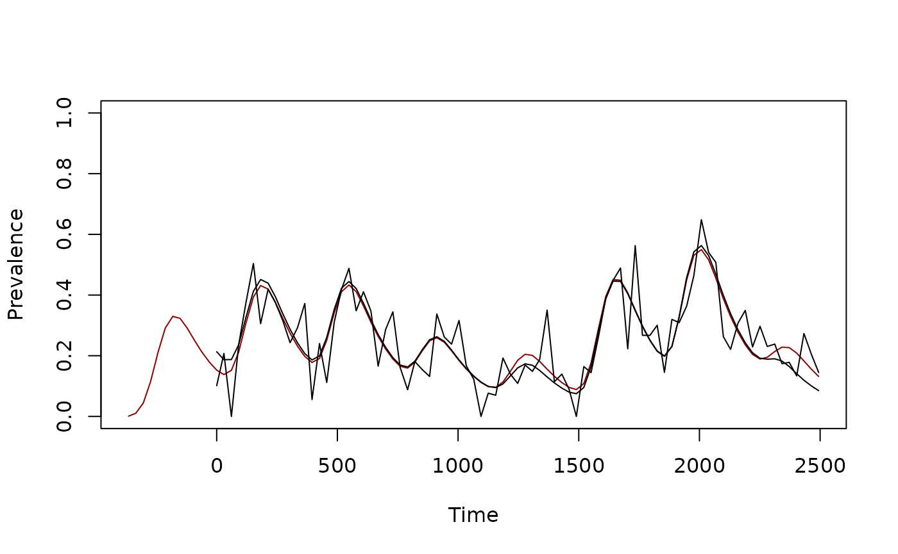

Trends
February 15, 2025
Trend.Rmd
#devtools::load_all()Here, we illustrate the use of functions that fit parameters for a seasonal pattern.
Pseudo Data
We generate a seasonal signal for the PfEIR.
tt <- round(seq(0, 2500, by = 365/12))
Fpar <- makepar_F_sin(pw=3, bottom=0.3, phase=133)
Tpar <- makepar_F_spline(c(0:7)*365, c(1,2,1,1/2,1,3,1,1/3))
Fs0 <- make_function(Fpar)
Ts0 <- make_function(Tpar)
plot(tt/365, Fs0(tt)*Ts0(tt), type = "l", xlab = "Time (Years)", ylab = "EIR")
mod <- xds_setup_cohort(1/365)
mod <- xds_solve_cohort(mod, times = c(0, 3650))
mod <- last_to_inits(mod)
mod$EIRpar$F_season <- Fs0
mod$EIRpar$F_trend <- Ts0
mod <- xds_solve_cohort(mod, times=tt)
pr <- mod$outputs$orbits$XH[[1]]$true_pr
obs_pr <- pmax(0, rnorm(length(tt), pr, .08))
xds_plot_PR(mod)
lines(tt, obs_pr)
dt <- data.frame(tt, pr, obs_pr)
write.csv(dt, "pseudo.csv")Fitting the Trend
In the first step, we define a model with the right average EIR and seasonal pattern.
mod1 <- xds_setup_cohort(eir = 1/365, season_par = Fpar)
mod1 <- xds_solve_cohort(mod1, times=tt)
xds_plot_PR(mod1)
lines(tt, obs_pr)
A function is then called that fits a spline to the data. The algorithm is modifying the EIR signal to fit the PR signal.
fit_spline(obs_pr, tt, mod1) -> mod1
ttp <- round(seq(-365, 2500, by = 365/12))
mod1 <- xds_solve_cohort(mod1, times=ttp)
xds_plot_PR(mod1, clrs = "darkred")
xds_plot_PR(mod, add=TRUE)
lines(tt, obs_pr)